Snow reports · Snow depth
Daily snow reports for skiers: where the snow is, what is coming and where to ski, from the SnowScope snow map and measuring stations. Every number comes from that day's data.


Mount Rose Ski Tahoe has 38 in (97 cm) on 22 November, more than four times last year's 9 in (23 cm). All four major resorts tracked show gains.

Whistler Blackcomb leads Western Canada with 153 cm on upper slopes. Snow covers 398,620 km² across 52 of 57 resorts on 22 November.

Gavarnie-Gèdre leads the Pyrenees with 26 cm on upper slopes on 22 November. Snow coverage has tripled in two days across the region.


No snow on Atlas pistes on 21 November. High summits hold 1 cm at most. All three resorts are bare; the next storm may take weeks.

Alps snow report, 21 November: Alpe d'Huez has 92 cm on upper slopes. Orelle leads the region with 136 cm. Fresh snow incoming by Tuesday.

5 resorts in the Alps, 46 past winters, one date: here is how today compares. Clearly above normal: 0. Confidence: good for the trend, lower for any …

Early-season snow in the Alps is running 38% above the 46-year average. La Plagne's mid-slopes hold 36 cm more than usual for this date, with heavy snow forecast through Sunday.

About 28 inches of new snow at Mammoth and 26 inches at June Mountain on 18-19 November. What the storm is, how it ranks against past winters, and the best days to go.

From 13 to 19 November 2026 Slovenia got the most snow and kept it; Serbia and Croatia had a deep but short white weekend; Montenegro only on Durmitor; Bulgaria almost none. The ranking, with links to each country report.

Only Borovets and Bansko have a trace of snow at the top today, 2 cm each. A week ago Borovets had 11 cm. Day by day, and the one snowy day in the forecast.

Tornik on Zlatibor had up to 39 cm on its upper slopes on 15 November 2026; by Wednesday it had melted. Kopaonik barely turned white. The week day by day and what comes next.

Savin Kuk above Žabljak picked up 22 cm of snow from 13 to 19 November and still has 6 cm today. Kolašin 1450 and 1600 are bare. The week day by day, and the next chances.

Up to 30 cm of snow fell on northern Velebit and Bjelolasica on Friday 13 November 2026. By Tuesday it was gone. Day by day, what the mountains kept, and when snow comes back.

Snow is falling on Slovenia's ski mountains today: about 37 cm on Kanin and 21 cm on Krvavec. Where the snow lies, how it compares with past winters, and the next snowy day.
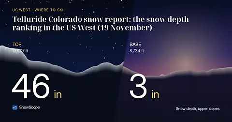
Telluride leads the US West with 125 cm on upper slopes on 19 November. Snow spread across the region to 782,430 km².

Snow-covered area jumped from 560 to 1,710 km² between November 17 and 19. Piau-Engaly holds the deepest snow at 15 cm on upper slopes as of November 19.

Only 3 of 318 snow stations in Japan had snow on the ground this morning. Here is where it is, what melted this week, and where the next snow falls.

Mount Washington Alpine Resort has 104 cm on upper slopes today. Whistler Blackcomb leads the region with 136 cm. Data from 18 November 2026.

Crested Butte has 38 in (97 cm) on upper slopes on 18 November. Telluride leads the region with 50 in (126 cm). Snow covers 281,920 sq mi across the US West.


Is there more snow than a year ago? We compared today with 15 November last winter at 4 resorts in Western Canada: 2 of them have more snow now, …

La Grave leads the Alps with 97 cm on upper slopes. Snow coverage is shrinking as early winter builds unevenly across the region on 15 November.

The Atlas holds just 20 km² of snow on 15 November, all on high summits up to 4 cm deep. No snow at ski resorts; none forecast through 18 November.

2 of 4: that is how many resorts in the US Northeast are clearly above normal today. How does this winter look so far? We set today's snow at 4 …

At Big White on 15 November, the upper slopes hold 68 cm near the summit while the base remains bare; an extreme vertical gradient typical of early season.

Himos opens a prepared cross-country loop on 14 November as natural snow remains absent from the forest floor around this Finnish resort.

Lofsdalen has 6–8 cm across the valley as of 13 November 2026, with 7 cm forecast over the next week and no rain threat.

On 14 November, Narvikfjellet has about 50 cm at the top and nothing at sea level. Snow depths vary with height by 1,000 metres.

Røros sits at 630 m on a mountain plateau. On 13 November, 11 cm lay measured at the weather station—thin but real winter snow for the sled-dog season.

Romme Alpin received patchy early snow on 13 November 2026. Borlänge station 12 km away measured 4 cm; Ludvika had 10 cm. Rain dominates the forecast.

Beitostølen has 12 cm measured at the weather station on 13 November. The whole ski area sits at the same altitude band, so snow depth barely changes from base to summit.

Vuokatti snow conditions in mid-November 2026: the stations at Sotkamo measured 0 cm on 13 November, Kajaani 1 cm; about 9 cm is forecast this week but some of it as rain; slopes aim to open 4 December. 46 past winters.

On 13 November, Kindsjön station at 425 m near Branäs measured 27 cm of snow while the valley floor stayed bare. Height is everything this week in Värmland.

Norefjell received 14 cm of fresh snow in the past week, with 45 cm now on the upper slopes. Data from 13 November 2026.

Tahko opens on made snow as natural cover melts. Expect 7–8 cm in the next week; rain and wet snow likely. Only 2 lifts running now.
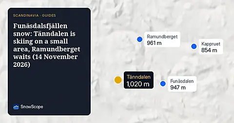
Tänndalen has 7 cm at its base station on 13 November, with 8 cm forecast in the next week. Ramundberget opens 19 December.

Rovaniemi's first snow arrived on 13 November: 7–8 cm at ground level. Here's what husky farms charge, when they open, and how to walk your dog safely in the Arctic.
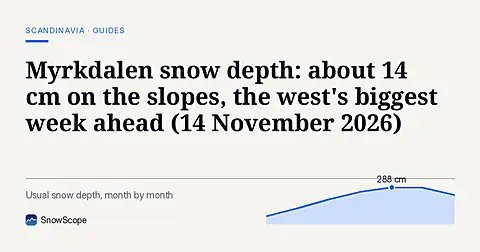
Myrkdalen sits behind normal for mid-November, but 44 cm of new snow is forecast at the top in the next week. Data from 13 November.

Kiruna town has 0 cm of snow on 13 November. Dog-sledding operators work around thin early-season snow. What to know about tours and local rules.

Saariselkä has 4 cm measured at its station on 13 November. About 22 cm is forecast for the next week. The usual depth here on 14 November is 17 cm.
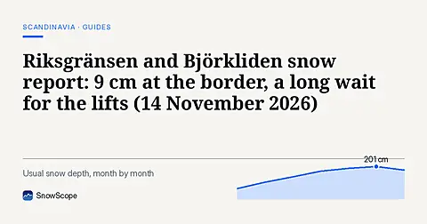
Riksgränsen holds 9 cm at base level on 13 November. Both resorts stay closed until February; the Arctic darkness, not snow depth, sets their season.

Hafjell has about 2 cm at the top on 14 November. The forecast adds 9 cm next week, but the base stays bare.

On 13 November 2026 the weather stations in Stockholm and Helsinki measured 0 cm of snow while Sälen had 45 cm and Umeå 20 cm. Height, the sea, the city and the track of the storms explain it, with numbers from 46 past winters.
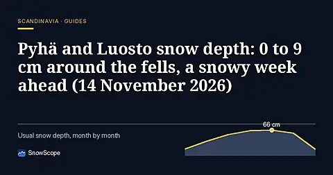
Snow is thin and patchy at Pyhä-Luosto on 13 November, but up to 23 cm is forecast in the next seven days across all heights.

Vemdalen snow conditions in mid-November 2026: Swedish weather stations around Vemdalsskalet and Björnrike measured 6 to 12 cm on 13 November after a snowy two days, about 8 cm more this week, opening plans and 46 past winters.

Voss will see 35 cm at the summit but rain at the base over the next week. Snow sits above 600 m, measuring 10 cm at nearby Mjølfjell on 13 November.

Tromsø's husky farms open from mid-November. On 13 November, town had 6 cm but the mountains held 44 cm. Here's how to book and what to know.

Sälen station near Kläppen measured 45 cm on 13 November after one night of heavy snow. Rain and mild air arrive this week. Data from 13 November 2026.

No snow in Bergen on 14 November: bare ground in town, 5 cm at Kvamskogen 35 km away. Heavy rain Sunday. Year-round dog rules apply.

Göteborg has 0 cm of snow on 14 November. The weekend is mild. November's leash rules are relaxed: explore parks and forests with your dog.

Helsinki has no snow on 14 November, but plenty of dog parks and forests. Snow usually arrives around 20 November.

No snow yet in Tampere on 14 November: bare ground at all stations, wet flakes forecast Saturday. Dog parks open year-round; ski tracks ban dogs except on special dog-only evenings.

Trondheim's weekend brings rain and mild air, not snow. Inland snow sits 5–18 cm deep, but Bymarka trails are wet. Know the year-round leash rules before you walk.

Ylläs snow conditions in mid-November 2026: the weather stations around Ylläs measured 0 to 2 cm on 13 November, far below normal; about 23 cm of snow is forecast this week with no rain, and the slopes aim to open on 21 November.

Kvitfjell has about 5 cm at the top on 14 November 2026, well behind the usual 27 cm. Upper slopes will gain snow this week; the base stays wet.
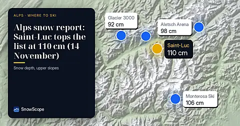
Alps snow report, 14 November. If you want the most snow in the Alps today, look at Saint-Luc (Switzerland): about 110 cm up high. After it come …

Bergen city is snow-free on 13 November, but Kvamskogen 35 km inland has 5 cm. Heavy rain arrives Sunday with little chance of snow.

Göteborg city is snow-free on 13 November. Gunntorp, 39 km north-east, measured 12 cm, but coastal stations show 0 cm across the region.

Luleå's airport sent no snow depth today, but six surrounding stations all measured 3 to 7 cm of fresh snow on 13 November 2026—a normal start for mid-November.

Dog owners in Oslo, 13 November 2026: 4 cm of snow at Blindern, 31 cm at Bjørnholt and 37 cm at Tryvannshøgda. Where dogs may run free, what the leash rules say in November, and a cold, dry Saturday.

Oulu's first snow cover of winter arrived on 13 November: 7 cm at the city station, above the usual 2 cm for this date. Forecast: 2–3 cm more by Saturday.

Rovaniemi has 7–8 cm of snow on 13 November, with 5 cm more forecast for the weekend. Thin but steady for the Arctic Circle.
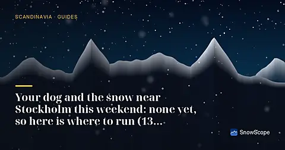
Stockholm has 0 cm of snow on 13 November. The nearest snow is 75 km away. Here are dog-friendly options in the city and when snow may arrive.

Tampere has no snow on 13 November, but 2 cm fell 48 km away. The city is a few days late; usually half of winters have snow by now.

Tromsø town has 6 cm but the Lyngen Alps hold 44 cm. SnowScope measured snow across the region on 13 November.

Trondheim's coast is bare, but 18 cm lies inland at higher ground. SnowScope measured the snow on 13 November 2026.

Finland's snow on 13 November lies north of Oulu: 7 to 8 cm in the Rovaniemi region, but bare ground in the south where Helsinki measured 0 cm across all stations.

Jämtland's first solid snow cover arrived this week: 19 to 33 cm measured at stations around Storsjön on 13 November. No thaw expected.
Norway's deepest snow on 13 November is 37 cm in the hills north of Oslo and 44 cm in Lyngen, Troms. The coasts are bare.

Helsinki measured 0 cm across all stations on 13 November. Snow usually arrives by late November, but this weekend brings only drizzle and rain.

Umeå recorded 20 cm at Röbäcksdalen on 13 November after bare ground four days earlier. This is far ahead of the typical November depth.

On 13 November, Kiruna measured 0 cm of snow for the first time in 46 winters. The forecast brings 1–2 cm this weekend, still far short of the typical 23 cm.

Manning Park leads western Canada with 120 cm on November 13, 34 cm ahead of Big White.

On 13 November, 133 of Sweden's 322 weather stations had snow. The deepest lay in a belt from Dalarna to Västerbotten, with Sälen at 45 cm, while the far north remained almost bare.

Stockholm measured 0 cm of snow on 13 November 2026. The capital remains snow-free while the north gets its first significant cover.

Deer Valley ski conditions on 13 November 2026: no real snow on the ground yet, about 4 in near the top from the weekend storm, rain on the low East Village side below about 6,700 to 7,600 ft, and 11 in up top over the week.

Measured snow depth in Oslo on 13 November 2026: 4 cm at Blindern, 31 cm at Bjørnholt and 37 cm at Tryvannshøgda. What a normal mid-November looks like, and what the weekend does to it.

As of 13 November, Killington's 12 cm is ahead of 42 past winters at this date; peak weeks typically arrive weeks 9, 11, and 10.

Oslo and Umeå lead 14 Nordic cities with snow on 13 November: 37 cm above Oslo, 20 cm in Umeå. Kiruna and southern capitals are bare.

A single snowy week can flatter a season, so we weigh today's snow against many past winters in Western Canada. Is the snow store filling as usual? …

Alpental snow forecast for 13 November 2026: about 1 in on the upper mountain, rain almost to the summit this weekend with a snow level near 5,400 to 5,600 ft, then 4 to 5 in of mixed rain and snow up top next week.

Bogus Basin snow check for Boise skiers on 13 November 2026: no snow on the ground yet, rain and mixed snow this weekend with a snow level near 6,300 to 6,800 ft, then colder air and about 8 in at the summit by next week.

The Sillian (Hochpustertal) ski map with our snow layer on 13 November 2026: 8.6 cm on the top at 2399 m, bare lower slopes, and a week of mixed rain and snow with the snow line near 1,800 to 2,000 m.

Silvretta Montafon snow conditions on 13 November 2026: 4.5 cm on the top at 2421 m, bare mid-mountain and valley, about 40 cm on the way up high this week while the valley gets rain below 1,500 m.
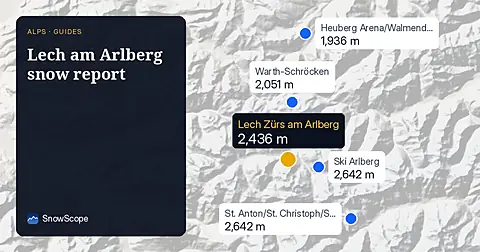
Lech Zürs snow report for 13 November 2026: about 6 cm at the top (2436 m) and at mid-mountain, bare in Lech at 1430 m. This week 42 cm up high on our forecast, up to 91 cm on others, rain and snow mixed around 1400 m. And why Lech is the snowy side of the Arlberg.
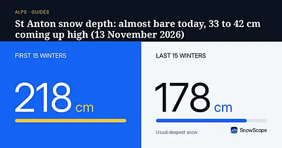
St Anton has 1 cm at the top and 5 cm mid-mountain on 13 November. The coming week brings 33 to 42 cm, but rain in the village.

The snow-covered area has grown from 39,090 km² on 11 November to 76,100 km² today, and our forecast gives 57,910 km² on 16 November: more ground is …

Snow retreats to the highest summits in the Atlas. The three ski resorts have no snow today; 40 km² of peaks stay white. More melt ahead.
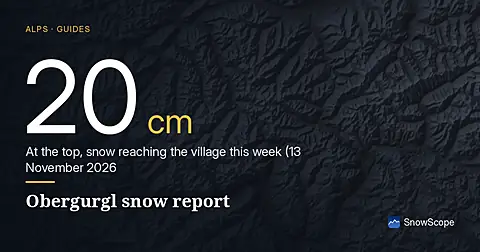
Obergurgl snow report for 13 November 2026: about 20 cm at the top (3024 m), 5 cm at mid-mountain, bare at the lowest lifts (1784 m). Snow forecast for the week: 34 cm up high, 21 cm low down, snow line near 1700 m. Plus the usual early season.

Snow depth in Sölden on 13 November 2026: about 9 cm at the top (3245 m), 5 cm at mid-mountain, none in the valley at 1346 m. 25 cm forecast up high this week, rain below about 1620 m. Glacier vs village, with 46 past winters.

Snow depth in Chamonix on 13 November 2026, height by height: nothing on the valley floor, 1 cm at 2001 m, 12 cm at the top of Brévent-Flégère (2486 m), 5 to 24 cm at the top of the Grands Montets (2768 m). About a metre forecast up high this week, rain in the valley. How deep Chamonix usually gets, from 46 winters.
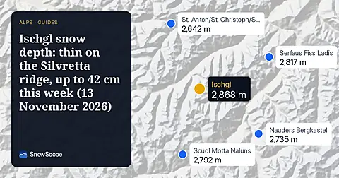
Snow depth in Ischgl on 13 November 2026: about 5 cm at the top (2868 m), 4 cm at mid-mountain, none in the valley at 1352 m. Up to 42 cm on the ridge this week, rain in the Paznaun below about 1570 m. Plus valley and ridge over 46 past winters.
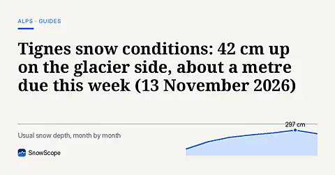
Tignes snow conditions on 13 November 2026: 42 cm at the top (3447 m), 12 cm at 2503 m, a bare valley at 1559 m, and 99 cm forecast at the top over seven days, with rain below about 1700 m. How it compares with 46 past winters.

On 12 November, four US Northeast resorts have less snow than a year ago. Gore Mountain is down 6 cm (2 in). SnowScope snow history, 12 Nov 2026.

Whistler Blackcomb holds 116 cm on the upper slopes as of 12 November, with 83 cm forecast over the next three days. Mount Washington Alpine Resort leads the region at 162 cm.

Cimarron Mountain Club, 39 in of snow: today's depth on the upper slopes (12 November). 42 in (106 cm): that is the snow on the upper slopes of …

Purgatory's summit holds 3 in (7 cm) on 12 November 2026. Snow totals over the next week: 7 in (17 cm) at the top, 6 in (15 cm) mid-mountain, 4 in (10 cm) at base.
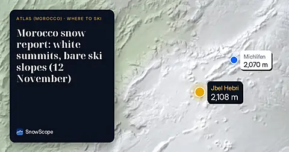
Atlas snow report, 12 November. Atlas ski resorts today: no snow on the slopes. Snow only on the top summits: about 40 km² of white ground, 10 cm at …

La Rosière top holds 24 cm on 11 November; next seven days forecast 108 cm at 2799 m, 61 cm at mid-mountain.
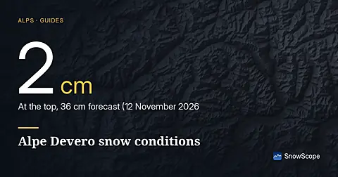
Alpe Devero has 2 cm at 2201 m on 12 November. The coming week brings 36 cm at the top, 24 cm at mid-mountain and 21 cm at the base.
Les Arcs forecast for 12 November: 69 cm incoming at the top, 46 cm at mid-mountain over the next seven days. Snow is building.
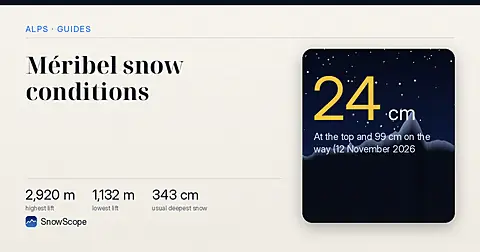
Méribel has 24 cm at the summit and faces 99 cm of new snow in seven days. Data from 11 November 2026.

Isola 2000 snow depths on 11 November 2026: 9 cm at the top, 7 cm mid-mountain, 2 cm at the base. Early-season cover across the Alpine resort.

No snow yet at Oukaïmeden on 12 November. The Atlas peaks sit bare; the winter season typically peaks in March with 58 cm at the top.
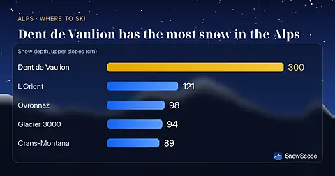
At 1,308 m on Dent de Vaulion, today's 0 cm is more than this date brought in 34 of the past 46 winters (usual: 0 cm): a good amount of water is …

Only the highest peaks hold snow in the Atlas today: 20 km² white, 6 cm deep. The ski slopes are bare. Data from 11 November.
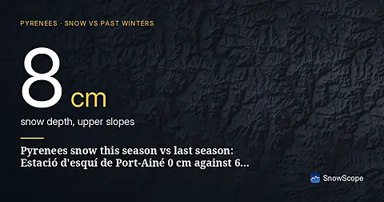
On 11 November the Pyrenees held almost no snow: Estació d'esquí de Port-Ainé has 0 cm against 6 cm last year. The season is weeks behind.

Wolf Creek measured 20 in (51 cm) on November 11, 2026, tracking 115% of normal while vastly outpacing last year's thin early start.

Wolf Creek's base sits at only 3 in (8 cm) while its summit holds 19 in (47 cm) on 11 November, a 15 in (39 cm) gap shaped by freezing level.

Wolf Creek leads with mid-slope snow at 361% of normal for November 10, well ahead of typical and signaling significant water storage in the mountains.

Whistler Blackcomb got 75 cm of new snow at the top in a week, then a warm storm with 124 mm of water. A simple guide to base, fresh snow, rain and crust.

Where is the deepest snow in Western Canada today? Deepest snow in Western Canada today: Manning Park Resort, about 110 cm on the upper slopes …

A cheap 3-day Lake Como plan for December with real 2026-27 prices: trains, ferries, a funicular and a ski day at Piani di Bobbio or Madesimo, what you save compared with Cortina, and the chance of snow at Christmas.
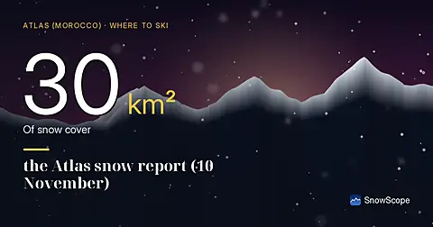
Only 8 cm of snow sits on the highest Atlas peaks today. No snow at any ski resort. Cover is shrinking fast through mid-November.

Livigno's snow today, what the European seasonal forecast says about December, and why height beats a warm month at Christmas.

Snow today in Cortina, the European seasonal forecast for December and our chances of a white Christmas, mountain by mountain in the eastern Dolomites.

Dolomites forecast for December 2026: warmer by 1.7 °C, slightly wetter, 30 cm snow by year-end, Christmas white at mid-mountain. Data from 10 November.